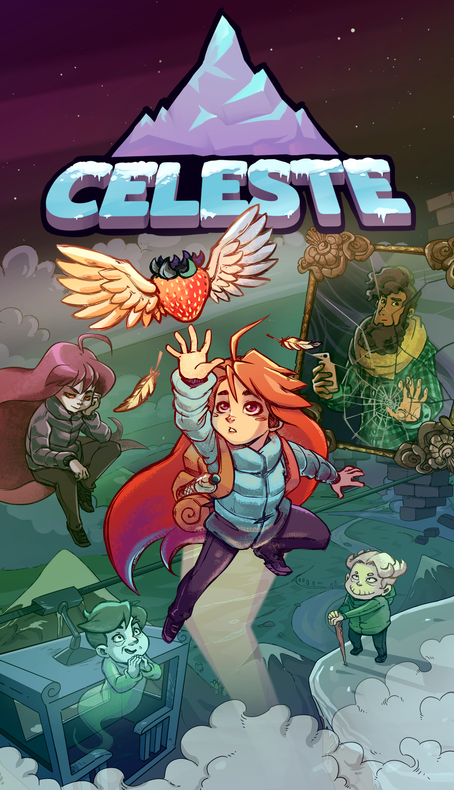

Oyun Hakkında
Tür: 2D Platform
Çıkış Tarihi: 25 Ocak 2018
Metascore: 92
Açıklama: Celeste, Madeline isimli karşısındaki çeşitli engelleri aşarak bir dağın zirvesine ulaşmaya çalışan bir kızı kontrol ettiğimiz bir platform oyunudur. Karakter zıplayabilen ve duvarlara tırmanabilen Madeline, ayrıca havada 8 farklı yöne sıçrayabilen bir yeteneğe sahiptir. Bu hareket zemine ayak basarak veya yenileyici kristallere vurarak yenilenmediği sürece bir kere yapılabilir. Oyunun 6. bölümü olan "Yansıma" 'nın sonunda Madeline çift sıçrama yeteneğini açar. Her seviyede oyuncu ilave bir mekanikle karşılaşır; oyuncuyu yukarı fırlatan yaylar, kısa bir uçuş gerçekleştiren tüyler ve dikenler gibi ölümcül nesneler bulunur (öldüğünüzde odanın başlangıcında dirilirsiniz). Oyuncular ayrıca yetenekleri ve oyunun fiziğini değiştiren bir yardım moduna da erişebilir. Bunlardan bazıları: Sonsuz hava sıçrayışı, ölümsüzlük, oyunun hızını düşürme... Bölümlerin çoğunda topladığınız sayıya göre oyunun sonunu etkileyen zorlu parkur ve bulmacalar içeren çilekler bulunur. Ek olarak her bölümde gizlenmiş aynı bölümün daha zoruna ulaşmanızı sağlayan "B-Tarafı" 'nı açan kasetler bulunur. Bütün B-Tarafları'nı tamamladığınızda ise bölümlerin çok daha zor ama kısa varyasyonlarını içeren C-Tarafları'nı açar. Bütün C-Taraflarını bitirirseniz de Altın Çilekler'e erişebilirsiniz. Celeste, Kanadalı oyun tasarımcıları Maddy Thorson ve Noel Berry tarafından geliştirilmiş bir platform video oyunudur. Oyun bir Game Jam için prototip olarak dört günde hazırlanmış, sonrasında ise tam bir oyuna çevirme kararı alınmıştır. Celeste aynı zamanda "2018 Yılının En İyi Indie Oyunu" ödülünü kazanmıştır. Celeste Ocak 2018'de Microsoft Windows, MacOS, Linux, PlayStation 4, Xbox One ve Nintendo Switch için yayımlanmıştır.
Ekran Görüntüleri
